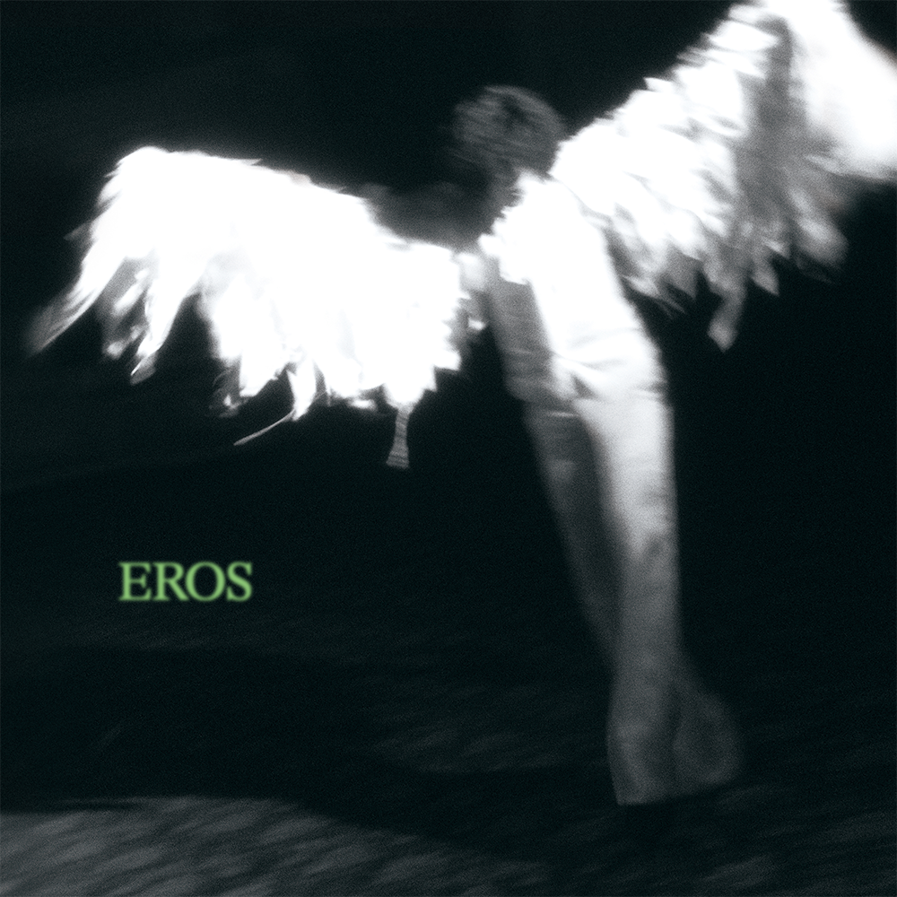

안녕하세요, 라보엠입니다.
오늘은 악뮤의 이찬혁이 선보인 솔로 정규 2집 [EROS]의 두 번째 트랙 ‘돌아버렸어’를 소개합니다. 2025년 7월, 이찬혁은 또 한 번 독창적인 음악 세계와 예술적 상상력을 펼치며, 팬들에게 깊은 인상을 남겼습니다. 이번 곡은 단순한 레트로 오마주를 넘어, 현실과 환상, 그리고 혼란의 경계에서 방황하는 한 사람의 내면을 섬세하게 그려냈습니다.

곡의 탄생과 음악적 배경
‘돌아버렸어’는 1980~90년대 신디사이저와 밴드 사운드, 그리고 밝은 글로켄슈필이 어우러진 레트로 팝 트랙입니다. 이찬혁 특유의 의성어와 재치 있는 표현력이 돋보이며, 곡 전체에 몽환적이고 신비로운 분위기가 흐릅니다. 실제로 곡의 전개는 전통적인 팝 문법을 비틀며, 새로운 감각적 경험을 주고 있습니다.
‘돌아버렸어’의 뮤직비디오는 한 편의 실험적 예술 작품을 연상시킵니다. 터널 안 홀로 선 공작새, 거대한 에어 호스, 수조, 상자, 빼곡히 들어선 빌딩 등 독특한 오브제 사이에서 끝없이 회전하는 이찬혁의 모습은, 곡이 담고 있는 혼란과 방황을 시각적으로 극대화합니다. 고뇌와 혼란이 깃든 눈빛, 뒤엉킨 듯 동요하는 몸짓은 마지막까지 아슬아슬한 긴장감을 유지하며, 곡의 여운을 깊게 남깁니다. 기존의 뮤직비디오 문법을 깨는 장면 배치와 몽환적 영상미는 이찬혁의 예술적 야심을 엿볼 수 있는 대목입니다.
가사에 담긴 혼란과 자아의 방황
눈이 빙글빙글 돌아서
그냥 돌아버렸어
잡고 있던 줄이 다 썩어서
손을 놓아버렸어
박수를 치는 crowd
내가 춤을 추는 줄 알지만
난 예전부터, wow
그냥 돌아버렸어
머리가 핑 돌아서
그냥 돌아버렸어
다들 울퉁불퉁 모가 나서
나는 누워버렸어
갈 곳을 잃은 clown
꽃을 전할 사람이 없네
맴돌다가, wow
끝내 돌아버렸어
또르르르르 눈물이 굴러가네
빙그르르르 끝도 없이 춤추네
우두두두두 무대가 무너지네
빙그르르르 커튼 막이 내리네
박수를 치는 crowd
내가 춤을 추는 줄 알지만
난 예전부터, wow
그냥 돌아버렸어
‘돌아버렸어’의 가사는 세상과 자신, 그 사이에서 길을 잃은 한 사람의 심리를 직설적으로 드러냅니다.
- “눈이 빙글빙글 돌아서 그냥 돌아버렸어”
- “잡고 있던 줄이 다 썩어서 손을 놓아버렸어”
- “박수를 치는 Crowd, 내가 춤을 추는 줄 알지만 난 예전 같지 않아”
이처럼 반복되는 의성어와 직설적인 문장은, 혼란스럽고 불안한 내면을 효과적으로 표현합니다. 특히 “갈 곳을 잃은 Clown”이라는 구절에서는, 세상 속에서 방황하며 자신의 자리를 찾지 못하는 현대인의 모습을 투영합니다. 이찬혁은 현실의 무게에 짓눌린 자아, 그리고 그로 인한 무기력과 허탈함을 담담하게 노래합니다.
음악적 완성도와 이찬혁의 시도
이찬혁은 이번 곡에서 전작 ‘ERROR’에서 보여준 내면의 죽음과 성찰에, 타인의 죽음과 세상에 대한 시선을 확장하고 있습니다. ‘돌아버렸어’는 레트로 사운드를 이용하며, 그 위에 현대인의 불안과 방황, 그리고 세상과의 소통에 대한 고민을 녹여냈습니다. 글로켄슈필의 밝은 음색과 신스, 밴드 사운드가 어우러지며, 이찬혁 특유의 실험정신이 곡 전체에 녹아 있습니다.
‘돌아버렸어’는 누구나 한 번쯤 느껴봤을 혼란과 무기력, 그리고 세상에 대한 두려움을 솔직하게 마주하게 합니다. 반복되는 일상과 기대, 그리고 그 속에서 점점 지쳐가는 자신을 발견할 때, 이 곡은 조용히 위로와 공감을 건넵니다. “그냥 돌아버렸어”라는 담담한 고백 속에는, 더 이상 버티지 못하는 한계와, 그럼에도 불구하고 다시 일어나려는 의지가 공존합니다.
맺음말
이찬혁의 ‘돌아버렸어’는 그의 독보적인 세계관과 예술적 감각이 집약된 곡입니다. 세상과 나, 그 경계에서 방황하는 모든 이들에게, 이 노래는 작은 위로와 공감의 메시지를 전하고 있습니다. 오늘 하루, ‘돌아버렸어’를 들으며 자신의 내면을 조용히 들여다보는 시간을 가져보는 건 어떨까요? 이 곡이 여러분의 하루에 깊은 여운과 새로운 시선을 선물해주길 바랍니다.